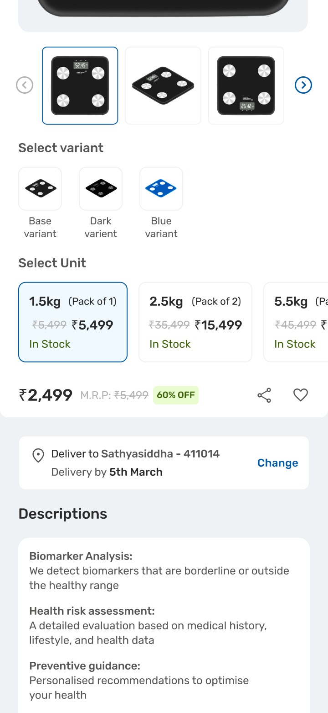
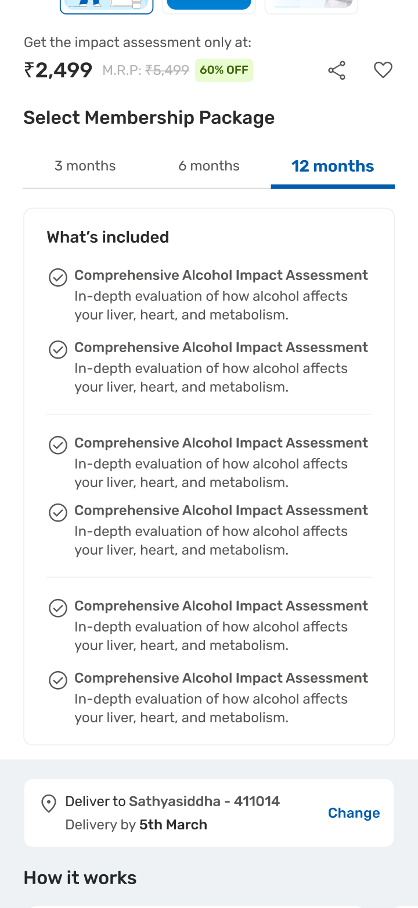
01
One store, two buying models
Products come from vendor APIs, programs from an internal CMS. One card system over both. The split shows below the fold: variant and pack size on one, duration and inclusions on the other.
Case study · Bajaj Finserv Health · 2025–2026
Bajaj Finserv Health’s first e-commerce product. A wellness marketplace built from zero, with a B2B2C wallet as the hook.
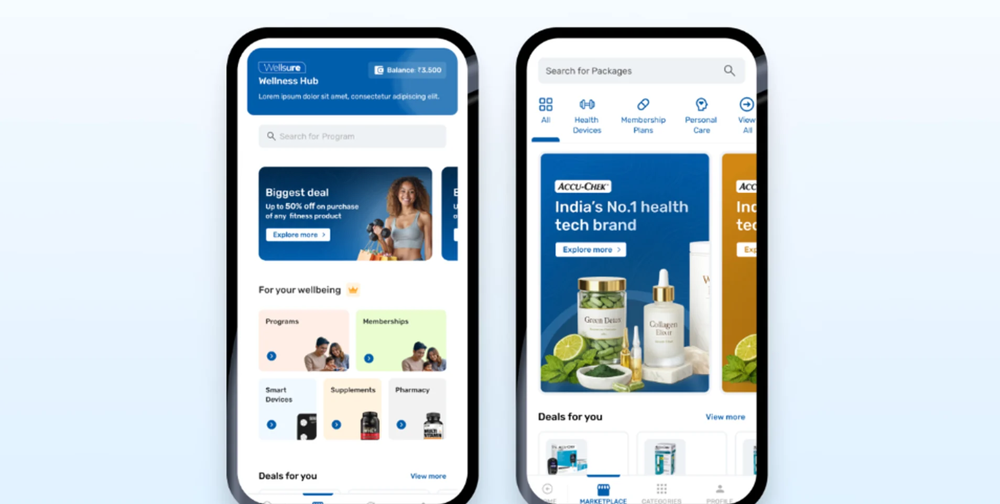
01Overview
Wellness Store is Bajaj Finserv Health’s commerce layer. It holds four product types in one architecture.
Vendor-integrated supplements and smart devices alongside in-house programs and subscriptions. Four content models, one card system, one checkout, on a healthcare design system that had never sold anything.
The primary user arrives through their employer’s Health Prime Plan carrying preloaded wallet credit. That set the constraint every screen answers to: the balance, and the price it changes, stay legible from the first tile to the confirmation.
Four product types, one storefront
02My role
Ownership
End-to-end UX and UI: IA, flows, wireframes, shipped interface.
Contribution
Team
1PM
2vendor integration partners
and engineering
Out of scope
Admin and operations tooling.
03The problem
Bajaj Finserv Health had no marketplace. There was no single place in the app to sell nutra supplements, its own health programs, wellness devices or vouchers.
The wallet made the gap visible. Credit was scoped to appointments and lab tests, so members held a balance with nothing else to spend it on. For supplements, devices and memberships, they went elsewhere.
What was needed: one marketplace inside the app for all of it, with one cart, one checkout, and wallet credit that finally had somewhere to go.
04Key challenges
01
Nowhere to sell nutra supplements, health devices, memberships or programs. The healthcare design system had no PDP, cart or checkout, and no vocabulary for quick-commerce or traditional e-commerce. Iterated toward commerce, not forked into a second system.
02
Reuse over custom builds. Vouchers as a fast-follow, not an MVP blocker. Personalization deferred. Designing to what engineering could ship was the job, not a compromise.
05Goals
Business
Recapture wellness spend through the B2B2C wallet.
Product
Carry the whole catalog through one familiar flow.
Design
06Who we designed for
Primary
Employees on a Health Prime plan their employer bought. They arrive with preloaded wallet credit and exclusive pricing. The primary audience.
Also
Members covered under Group Medical Coverage, reached through the same plan structure.
Three barriers stood in the way. Each was assigned to a design objective rather than left as background colour.
| Barrier | Design objective |
|---|---|
| Too many options | Hold all four product types in one IA and one card system, so breadth never becomes noise. |
| Trust | Lean on patterns members already know, so nothing about the mechanics of buying asks to be learned. |
| Price | Keep the wallet’s value visible from home through confirmation, so the discount is never a surprise at the end. |
07Approach
Step 05 ran as a loop, not a stage. Feedback went back into the UX before anything was committed to final design.
The architecture
Phase 1 information architecture
08Secondary research
Traditional e-commerce
The conventions a buyer already knows, and the depth a catalog is expected to have.
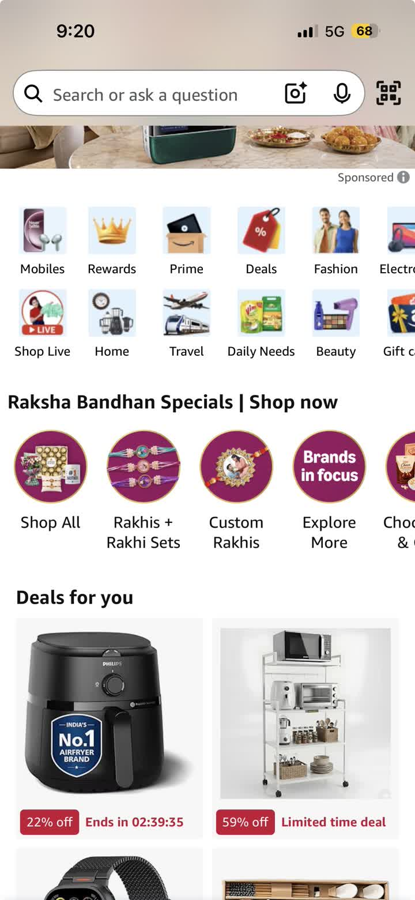
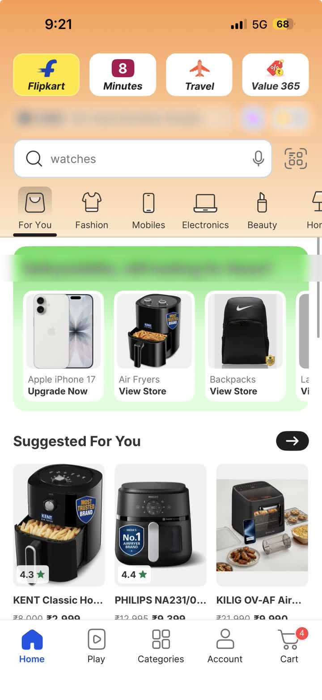
Quick-commerce
Wellness restocking behaves like groceries. Speed, repeat and a cart that never leaves the screen.
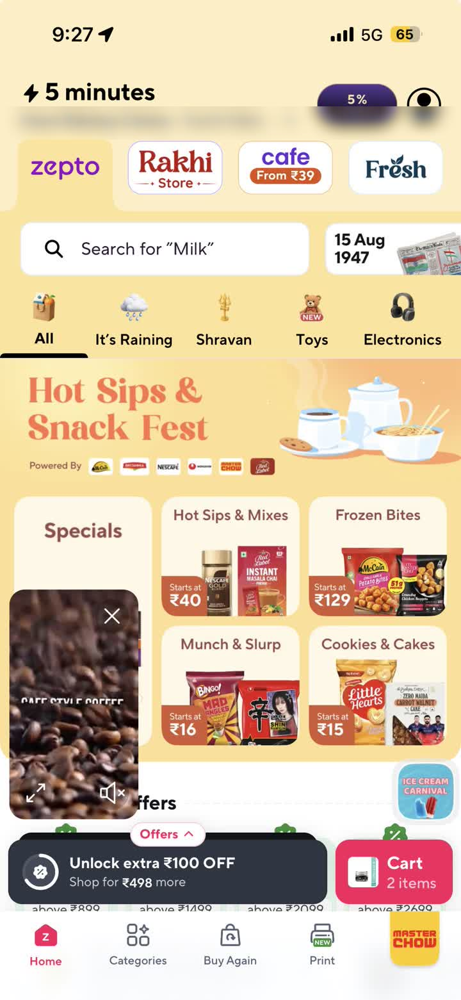
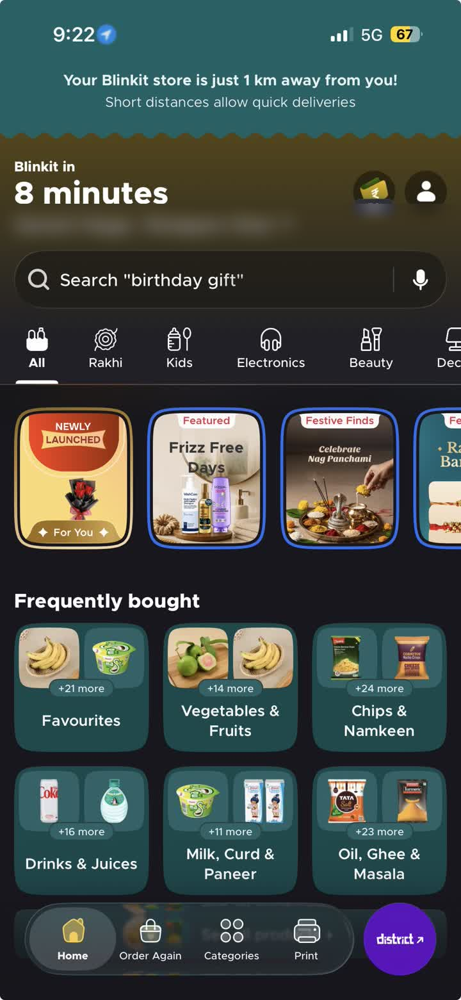
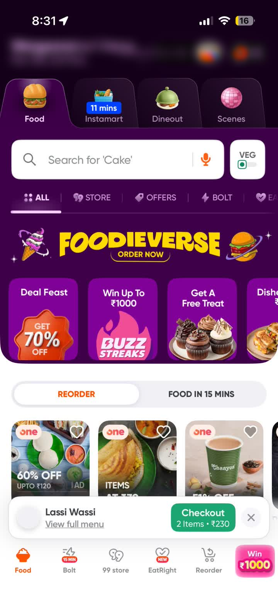
Wellness needs both: enough structure to choose a health program, enough habit to restock a protein tub.
09Key design decisions


01
Products come from vendor APIs, programs from an internal CMS. One card system over both. The split shows below the fold: variant and pack size on one, duration and inclusions on the other.
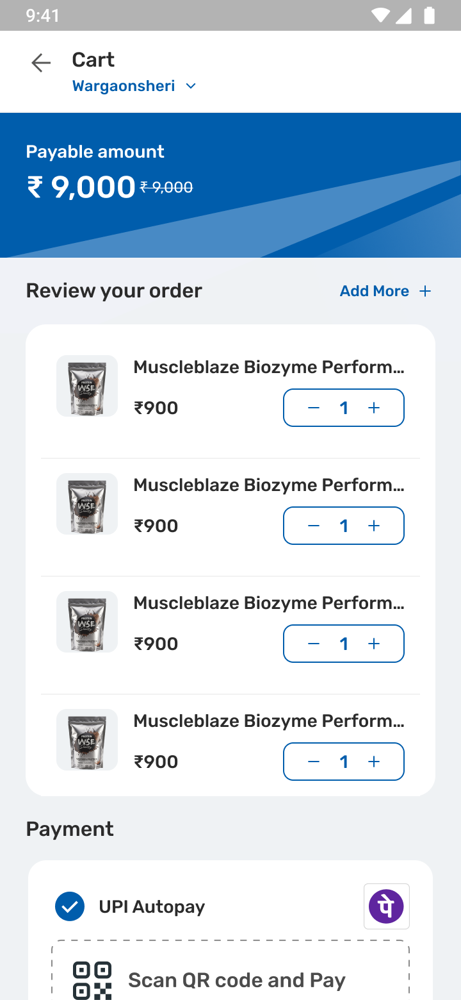
02
One cart holds several vendors. The member sees one order; the backend splits wallet credit proportionally into per-vendor sub-orders.
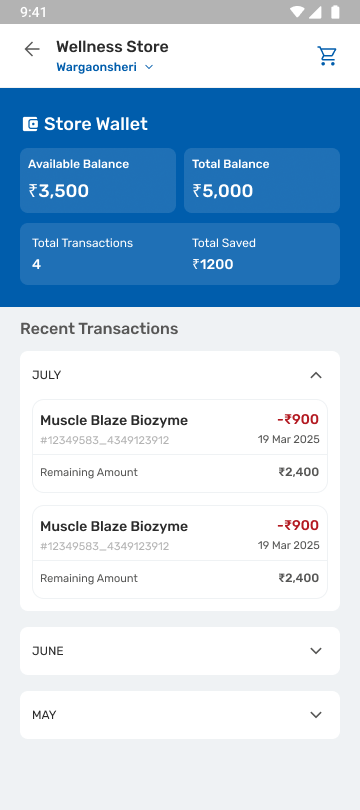
03
Balance in the header, member price on the card, each deduction itemised at payment. Behind them a Store Wallet screen: balance against allocation, total saved, every transaction. An account the member can audit, not a discount that appears at the end.
Behind the scenes
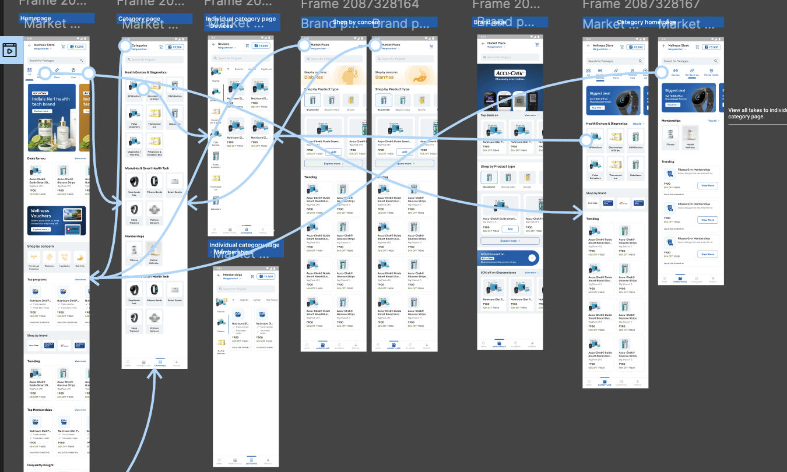
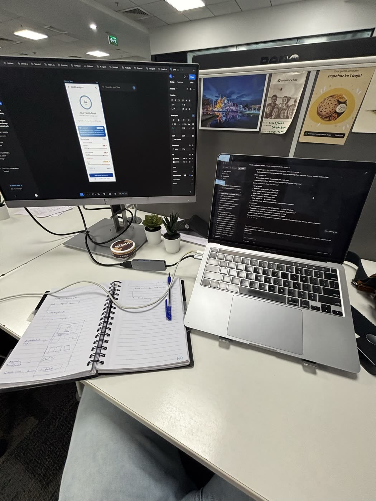
Most of the work was smaller than a decision. Choosing a stepper over a chip. Extending a healthcare component instead of drawing a new one. Moving a balance eight pixels so it clears the wordmark. The three calls above are what survived; this is the middle they came out of.
10Phases
Phase 1Live
Wallet balance in the header, entitlement tiles above the fold, four product types under one card system.
The barrier was too many options, not too little inspiration, so the fold leads with entitlements, not a banner carousel.
Phase 1.2Live
Tiered vouchers bought with wallet credit. The PDP swaps the quantity stepper for denomination chips. The thing being chosen is a value, not a count.
Adapt a gift-card pattern people already recognise, so the value is legible at a glance.
Phase 2In development
Brand Pages: hero banners and curated merchandising the design controls, replacing a trust signal it doesn’t. The diagnosis behind it, and the screens, are in the journey that follows.
11Journeys
Phase 1 and 1.2 Live
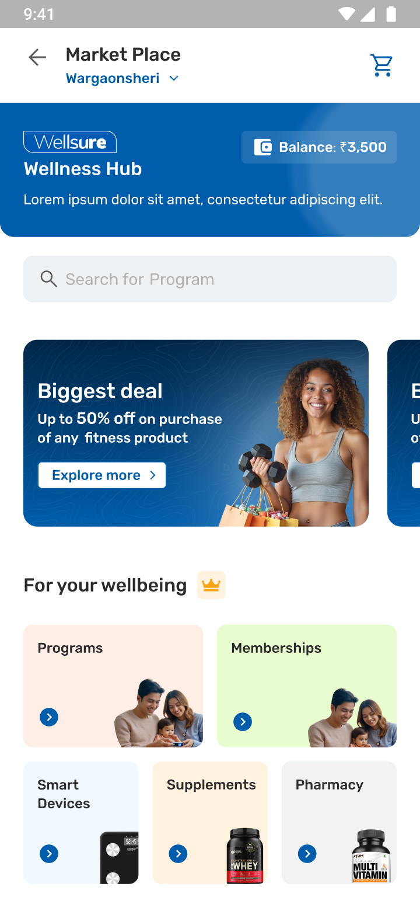
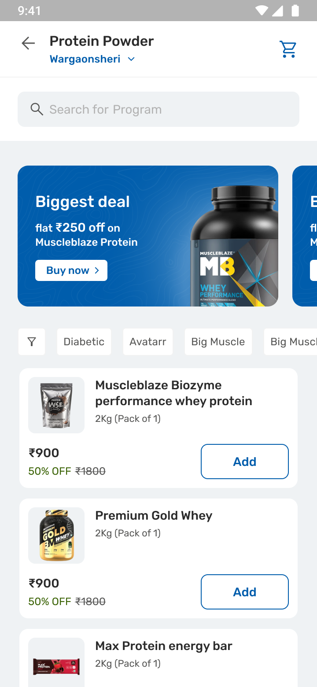
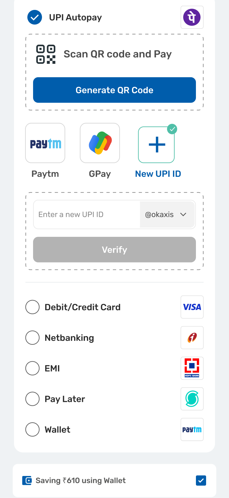
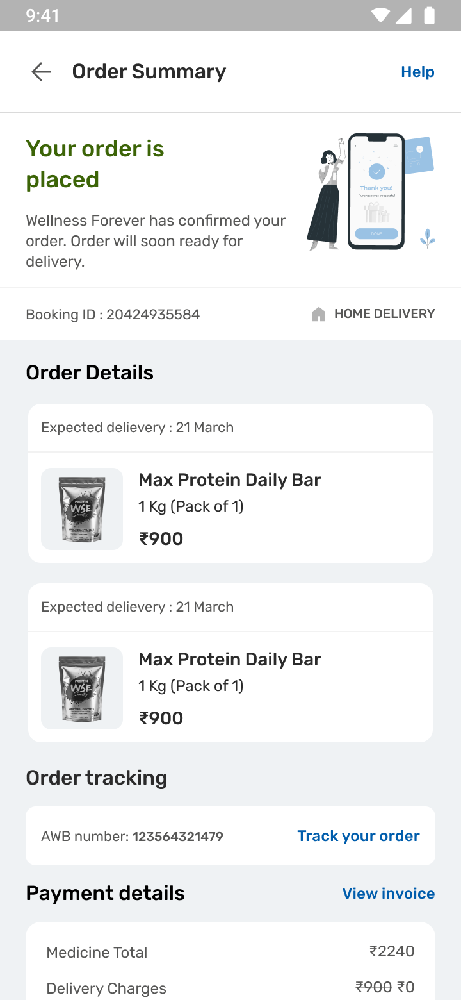
The two PDP models, side by side.
One asks which variant and which pack size; the other asks how long, then lists what that buys.
Sub-flow Voucher purchase, Phase 1.2: denomination replaces quantity, a structurally different PDP feeding the same cart and checkout.
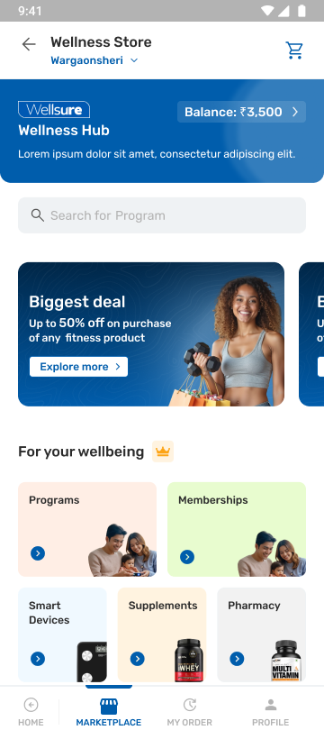
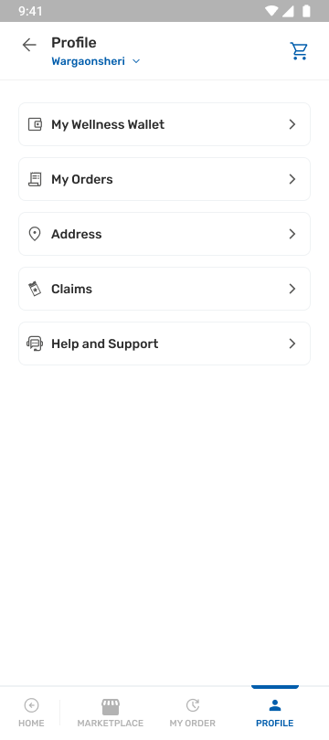
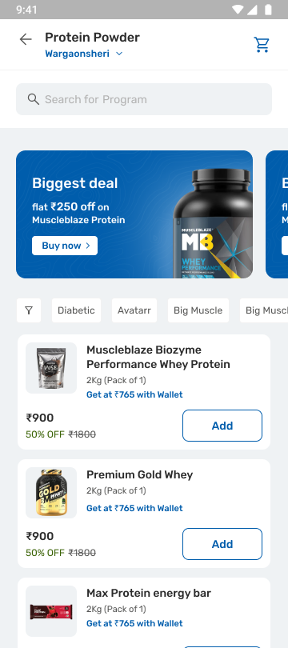
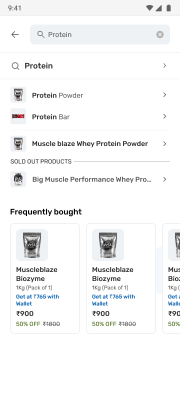
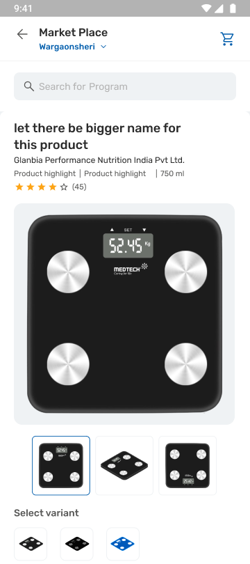
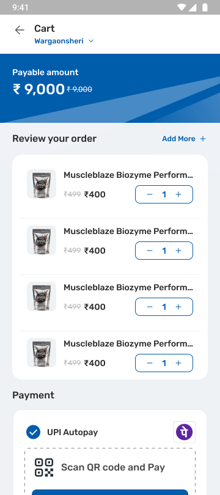
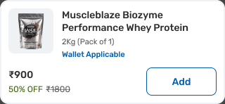
The card, close up. Two treatments were drawn: a plain Wallet Applicable flag, and the member price stated outright.
The wallet is the B2B2C differentiator and the spine of the store’s value proposition. It launched late in Phase 1 and remains early-volume, a strategic bet rather than a proven driver.
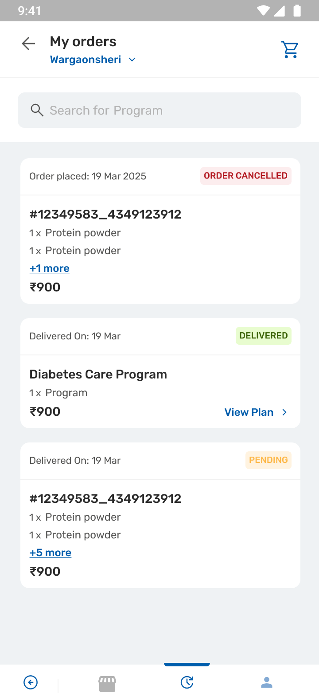
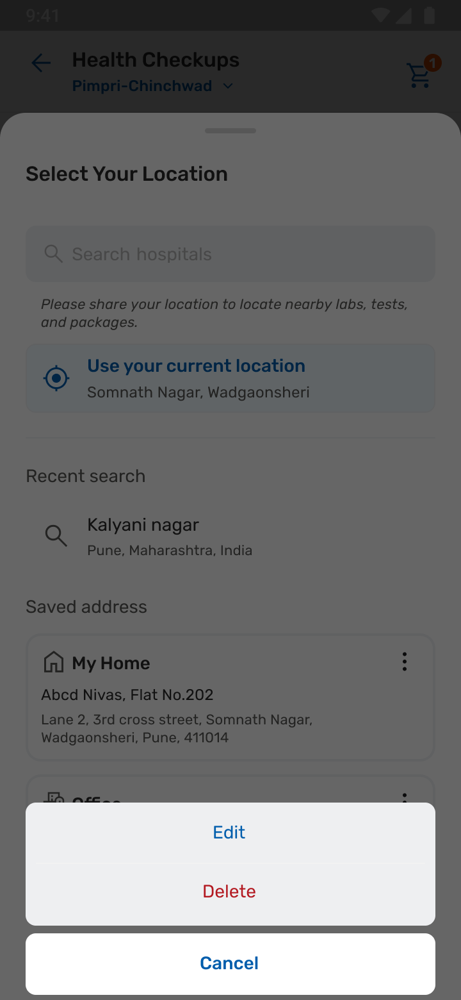
12Results
Revenue in year one
~₹66L
Phase 1 and 1.2.
Margin
26%
on ~₹17L profit.
Orders
~940
Spread across all four product types.
Monthly revenue, ₹ lakh
| Month | Revenue (₹L) |
|---|---|
| July 2025 | 0.4 |
| August 2025 | 2.2 |
| September 2025 | 4.2 |
| October 2025 | 4.0 |
| November 2025 | 4.3 |
| December 2025 | 3.4 |
| January 2026 | 3.8 |
| February 2026 | 6.3 |
| March 2026 | 10.5 |
| April 2026 (peak) | 11.6 |
| May 2026 | 9.4 |
| June 2026 | 4.2 |
| Revenue | ~₹66L | Year one, Phase 1 and 1.2. |
|---|---|---|
| Profit | ~₹17L | A 26% margin. |
| Orders | ~940 | Spread across all four product types, the one-IA objective holding in practice, not only in Figma. |
| Growth | ~₹44K → ~₹11.6L | Month one to the April 2026 monthly peak. |
| Top lines | ~₹37L / ~₹19L | A fitness membership tie-up, then Diabetes Care. Programs and memberships were the strongest earners. |
| Current pace | ~34% ahead | Early July tracking ahead on GMV. A partial month, so it is not plotted on the curve. |
On attribution
Revenue reflects catalog, pricing and marketing alongside design. Design supported this outcome; it did not solely cause it.
The wallet remains the strategic bet, still early-volume, with today’s performance overwhelmingly direct sales.
These say the store works as a business. They do not isolate design. No design objective was instrumented, which is what the last section asks for.
13Phase 2
Trust and discovery journey In development
Why
Revenue peaked in April, then softened for three straight months.
The likeliest cause was specific: inconsistent, low-quality vendor photography eroding trust at the point of decision. The catalog arrived through vendor tie-ups, so the imagery was never the design team’s to control, and chasing vendors for better images was neither fast nor reliable.
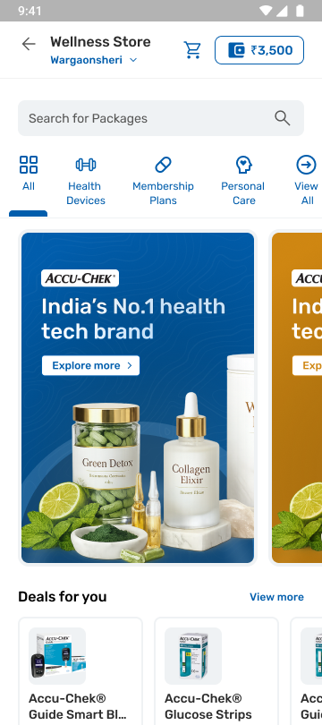
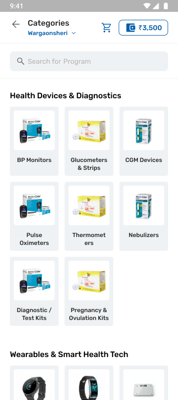
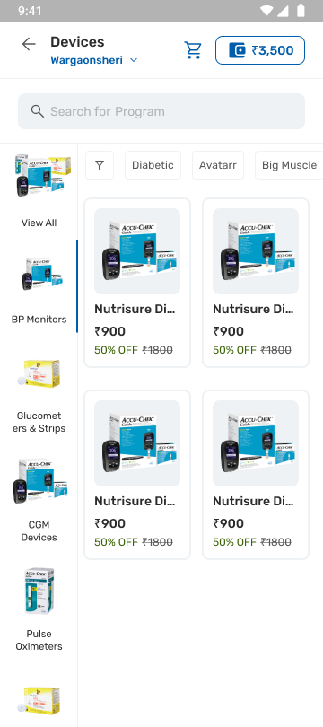
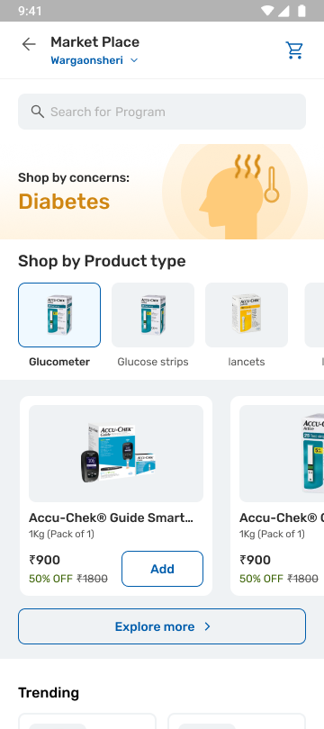
Brand page, in full
The end of the journey and the whole point of it.
The banner, the product lineup and the discount bands are merchandising design controls, sitting where an unreliable vendor photograph used to carry the decision.
It doubles as a browse surface: shop by product type, top deals, curated rows. One page answering both trust and discovery.
Brand Pages add an IA layer, a real trade-off, in exchange for a fix that does not wait on vendors. The org prioritised it into development. It has not shipped, so there is nothing here to claim.
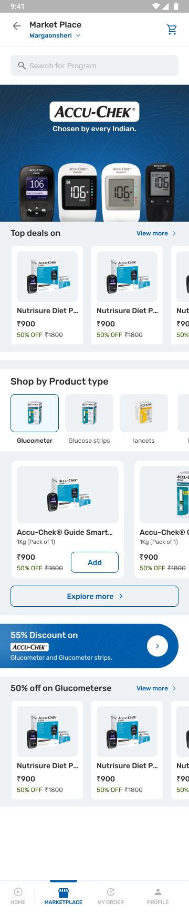
14Key learnings
01
I had to take the DLS apart component by component to see what could carry commerce and what had to be rebuilt. Extending a system I had not pulled apart first would have been guesswork, and the guesses would have shipped.
02
Annotating every screen and shipping an asset file alongside it did more for delivery than any handover meeting. It made the work easier for me and for the dev team, and it took most of the back and forth out of the build.
03
User feedback kept pointing at familiarity rather than novelty. Each round told me where people expected something they had seen before, and the flow got simpler every time I listened to that.
15Next steps